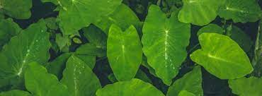
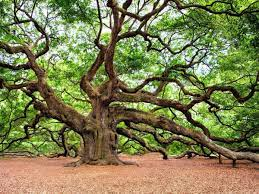

Un árbol es una planta, de tallo leñoso, que se ramifica a cierta altura del suelo. El término hace referencia habitualmente a aquellas plantas cuya altura supera un determinado límite en la madurez, diferente según las fuentes: dos metros,1 tres metros,23 cinco metros4 o los seis metros.5 Además, producen ramas secundarias nuevas cada año, que parten de un único fuste o tronco, con clara dominancia apical,6 dando lugar a una nueva copa separada del suelo. Algunos autores establecen un mínimo de 10 cm de diámetro en el tronco (la longitud de la circunferencia sería de unos 30 cm).7 Las plantas leñosas que no reúnen estas características por tener varios troncos o por ser de pequeño tamaño son consideradas arbustos.
La hoja (del latín fŏlĭum, fŏlĭi) es el órgano vegetativo y generalmente aplanado de las plantas vasculares, especializado principalmente para realizar la fotosíntesis. La morfología y la anatomía de los tallos y de las hojas están estrechamente relacionadas y, en conjunto, ambos órganos constituyen el vástago de la planta.
En las pteridófitas más primitivas las «hojas» son reducidas, no presentan haces vasculares y se denominan microfilos. Las «hojas» vascularizadas, los megafilos o frondes, son características de las pteridófitas modernas, son más desarrolladas y poseen haces vasculares.2
La rama es la parte del árbol o arbusto en la que crecen las hojas. Se trata de una estructura de madera conectada al tronco central. Las ramas pueden desarrollarse de forma horizontal, vertical o diagonal, esta última forma es la que presentan la mayor parte de las especies arbóreas.
La poda consiste en el corte de ramas y se realiza con fines estéticos para dar forma, de limpieza para eliminar ramas muertas, para estimular el crecimiento, etc. En árboles frutales se utiliza generalmente para aumentar la producción de frutos, entre otros menesteres.